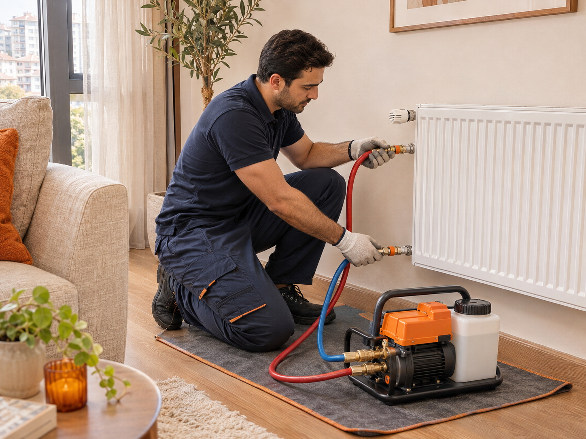

Altı soğuk, üstü sıcak petekler
Petek içindeki birikim dolaşımı etkileyebilir. Tesisatın durumuna göre temizlik değerlendirilir.
Peteklerin altı soğuk, odalar eskisi gibi ısınmıyor mu? İhtiyacınızı konuşalım; makineli petek temizliği için evinizde bir randevu planlayalım.
0501 013 0102
Isınma sorununun birden fazla nedeni olabilir. Belirtileri paylaşın; temizlik ihtiyacını ve hizmetin kapsamını birlikte değerlendirelim.
Durumu bize anlatın ↗Petek içindeki birikim dolaşımı etkileyebilir. Tesisatın durumuna göre temizlik değerlendirilir.
Dengesiz ısınmada hava, vana ayarı ve dolaşım gibi etkenleri de dikkate almak gerekir.
Tesisatın geçmişi ve mevcut belirtiler, yapılacak işlemin planlanmasına yardımcı olur.
Karmaşık formlar yok. Petek sayısı, konum ve yaşadığınız sorunu paylaşmanız yeterli.
İlçenizi, petek sayısını ve ısınma sorununu anlatın. Hizmet kapsamı, ücret ve uygun randevuyu netleştirelim.
Uygun bağlantı noktasından temizlik makinesi tesisata bağlanır. Tesisat koşullarına uygun dolaşım işlemi uygulanır.
İşlem sonrası bağlantı ve tesisat kontrolleri yapılır. Kullanım ve takip için gerekli bilgiler paylaşılır.
Farklı bir sorunuz varsa bizi arayabilirsiniz.
Petek sayısı, tesisatın yapısı, bulunduğunuz konum ve yapılacak işlemin kapsamı değerlendirilir. Randevu öncesi bu bilgileri paylaşarak güncel fiyatı öğrenebilirsiniz.
Süre; petek sayısına, tesisatın durumuna ve erişime göre değişir. Görüşmede bilgileriniz alındıktan sonra yaklaşık süre paylaşılır.
Makineli işlem, tesisatın uygun bağlantı noktası üzerinden planlanır. Söküm ihtiyacı ve uygulanabilecek yöntem, sistemin mevcut durumuna göre değerlendirilir.
Her ısınma sorunu kirlenmeden kaynaklanmaz. Hava, vana ayarları, pompa, kombi veya tesisat tasarımı da etkili olabilir. Temizlik sonucu tesisatın durumuna bağlıdır.
Bulunduğunuz ilçe, yaklaşık petek sayısı, kombi veya merkezi sistem bilgisi ve yaşadığınız sorunu paylaşmanız başlangıç için yeterlidir.
Hizmet evinizde uygulanır. Bulunduğunuz konum için randevu uygunluğunu telefonla öğrenebilirsiniz.
Adresi haritada ara ↗